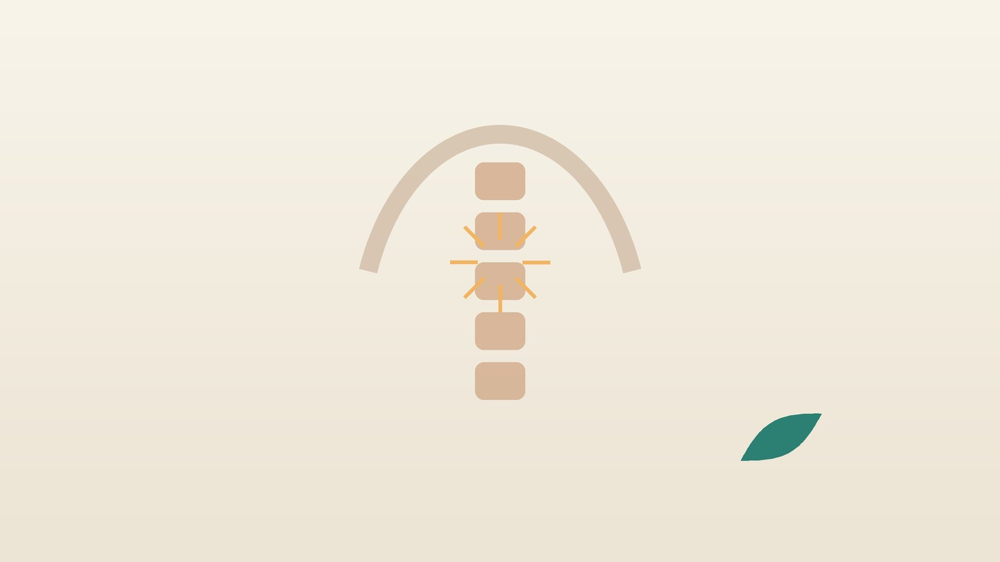

건강 칼럼 · 인천 등통증 한의원
날개뼈 사이 등이 뻐근하다면, 등 통증 한방 치료

나의 등 통증, 이런 모습인가요?
- 날개뼈 사이가 뻐근하고 손이 닿지 않는 곳이 결린다
- 스마트폰이나 모니터를 오래 보면 등이 타는 듯 무겁다
- 가슴을 펴거나 뒤로 젖히면 등 가운데가 뚝뚝 소리 나며 시원하다
- 어깨가 앞으로 말리고 등이 굽었다는 말을 듣는다
- 아침보다 오후로 갈수록 등이 점점 무거워진다
- 깊게 숨을 쉬면 등 한가운데가 당긴다
이 체크리스트는 진단 도구가 아니라 상담이 필요한지 가늠해 보는 참고용입니다.
등 통증은 왜 생기나요?
흉추는 갈비뼈와 연결되어 있어 목이나 허리보다 덜 움직이는 대신, 한번 굳으면 주변 근육이 그 몫을 떠안게 됩니다. 고개를 숙여 스마트폰을 보면 머리 무게가 앞으로 쏠려 목과 등 근육이 계속 버텨야 하고, 어깨가 말린 자세로 오래 있으면 날개뼈를 붙잡는 마름모근과 등세모근 중간 부분이 늘어난 채 지쳐 통증이 생깁니다.
이 밖에 한쪽으로만 하는 운동이나 무거운 물건 들기, 잘못된 베개와 엎드려 자는 습관, 스트레스로 어깨를 움츠리는 버릇도 원인이 됩니다. 반면 나이가 들면 골다공증으로 흉추의 몸통이 납작하게 주저앉는 압박골절이 생길 수 있는데, 재채기나 물건 들기 같은 가벼운 일로도 생기고 키가 줄거나 등이 굽는 것으로만 드러나기도 합니다. 폐경 후 여성과 고령 남성은 골밀도 검사로 미리 확인하는 것이 좋습니다(대한골대사학회 진료지침).
근육통이 아닐 수 있는 등 통증
- 갑자기 등이 찢어지듯 극심하게 아프고 통증이 아래로 옮겨 간다 (대동맥박리 의심, 고혈압 환자 주의, 119)
- 등과 함께 가슴이 조이고 숨이 차며 식은땀이 난다 (심근경색 의심, 119)
- 술을 많이 마신 뒤 명치에서 등으로 뚫고 나가듯 아프고 토한다 (췌장염 의심)
- 기름진 식사 뒤 오른쪽 갈비뼈 아래가 아프고 오른쪽 날개뼈 쪽으로 뻗친다 (담낭염·담석 의심)
- 폐경 후나 고령에서 가벼운 충격, 재채기 뒤 등 한가운데가 갑자기 아프다 (압박골절 확인)
- 열이 나거나, 이유 없이 체중이 줄거나, 누워 쉬어도 밤에 더 아프다
- 다리에 힘이 빠지거나 걸음이 휘청이고 대소변 조절이 어렵다
자세를 바꿔도 통증이 그대로이거나 움직임과 관계없이 아프다면 근육 문제가 아닐 가능성이 커져 검사가 먼저입니다.
한의학은 등 통증을 어떻게 보나요?
한의학에서는 등의 통증을 배통(背痛), 어깨와 함께 아프면 견배통(肩背痛)이라 불렀고, 『동의보감』 외형편에도 등(背)을 따로 다룬 항목이 있습니다. 등에는 몸의 가장 바깥을 지키는 족태양방광경(足太陽膀胱經)이 척추 양옆을 따라 두 줄로 내려가며, 이 줄 위에 폐수·심수·간수처럼 오장육부의 기운이 모이는 배수혈(背俞穴)이 자리합니다.
그래서 찬 바람과 습기를 맞으면 이 경락이 막혀 등이 뻣뻣해지고, 오래 같은 자세로 기혈이 정체되면 한 자리가 결리며, 내장의 이상이 배수혈 자리에 통증으로 비쳐 나온다고 해석했습니다. 그래서 소화와 호흡 상태도 함께 여쭙니다.
나의 등 통증은 어떤 유형일까?
1. 기체혈어(氣滯血瘀) 자세로 막힌 유형
- 이런 분에게 많아요
- 하루 종일 화면을 보는 사무직, 학생
- 나타나는 모습
- 날개뼈 사이 한 점이 콕 결리고 오후에 심해진다
- 함께 오는 몸의 신호
- 목 결림, 두통, 눈 피로
- 진찰에서 보이는 모습
- 등 근육에 단단한 띠와 압통점, 혀가 어두움
- 치료 방향
- 막힌 기혈을 풀어 굳은 등을 여는 방향 (침·약침·추나 위주, 필요 시 활혈 처방)
- 오늘부터 해 볼 것
- 50분마다 일어나 가슴을 펴고 날개뼈를 모아 주세요.
2. 풍한습(風寒濕) 찬 기운에 굳는 유형
- 이런 분에게 많아요
- 에어컨 바람을 많이 쐬거나 찬 데서 일하는 분
- 나타나는 모습
- 등이 무겁고 뻣뻣하며 따뜻하게 하면 풀린다
- 함께 오는 몸의 신호
- 오한, 몸이 찌뿌둥함, 비 오는 날 악화
- 진찰에서 보이는 모습
- 설태가 희고 맥이 뜨고 긴장됨
- 치료 방향
- 찬 기운과 습을 걷어 등의 경락을 여는 방향 (갈근탕·강활승습탕 계열)
- 오늘부터 해 볼 것
- 잘 때 등과 목에 찬 바람이 닿지 않게 하세요.
3. 담음(痰飮) 속이 더부룩하며 결리는 유형
- 이런 분에게 많아요
- 끼니가 들쭉날쭉하고 위장이 약한 분
- 나타나는 모습
- 등이 묵직하게 결리고 식후에 더하다
- 함께 오는 몸의 신호
- 속 더부룩함, 어지럼, 몸이 무거움
- 진찰에서 보이는 모습
- 혀에 끈적한 백태가 두껍게 끼고 맥이 매끄럽게 미끄러짐
- 치료 방향
- 정체된 담음을 삭이고 소화를 돕는 방향 (이진탕 계열)
- 오늘부터 해 볼 것
- 저녁 과식과 늦은 야식을 줄이세요.
4. 간신허(肝腎虛) 약해져 쉽게 지치는 유형
- 이런 분에게 많아요
- 폐경 이후 여성, 등이 굽기 시작한 어르신
- 나타나는 모습
- 등이 은근히 아프고 오래 서 있으면 주저앉고 싶다
- 함께 오는 몸의 신호
- 허리·무릎 약함, 키가 줄어듦
- 진찰에서 보이는 모습
- 혀가 옅고 맥이 가늘고 약함
- 치료 방향
- 간과 신을 보해 근골을 받치는 방향 (독활기생탕 계열)
- 오늘부터 해 볼 것
- 골밀도 검사를 받고 하루 20분 햇볕 아래 걸으세요.
한의원에서는 어떻게 진찰하나요?
- 위험 신호 문진: 통증이 시작된 상황, 가슴 통증·소화기 증상·열, 외상과 골다공증 병력을 먼저 확인합니다.
- 자세 평가: 머리와 어깨의 앞쏠림, 등 굽음, 날개뼈 위치를 옆과 뒤에서 살핍니다.
- 움직임과 압통: 몸통 회전과 젖히기, 흉추 마디별 움직임과 등 근육의 압통점을 확인합니다.
- 설진·맥진: 기혈 정체, 찬 기운, 담음, 허약 중 중심을 판단합니다.
침·약침·추나·한약 치료는 어떻게 하나요?
1. 침 치료
- 고황(膏肓): 넷째 등뼈 높이에서 바깥으로 손가락 네 마디쯤, 날개뼈 안쪽 가장자리. 날개뼈 사이 결림에 자주 씁니다.
- 격수(膈俞): 일곱째 등뼈 높이에서 양옆으로 손가락 두 마디. 막힌 혈의 흐름을 돕습니다.
- 후계(後谿): 주먹을 가볍게 쥐면 손날 쪽에 생기는 가로 주름의 끝자리. 목덜미와 등이 함께 굳을 때 씁니다.
- 위중(委中): 무릎 뒤 오금 가운데. 등과 허리의 경락을 함께 풉니다.
등은 바로 안쪽에 폐가 있어 깊게 찌르지 않고 얕고 비스듬하게 놓습니다.
2. 약침·추나·온열 요법
뭉친 등 근육과 압통점에 약침을 시행하고, 흉추와 갈비뼈 관절이 굳은 경우 진찰 후 추나 요법을 시행해 움직임을 되찾도록 돕습니다. 압박골절이나 심한 골다공증이 의심되면 추나는 하지 않습니다. 찬 기운에 굳는 분에게는 온열 요법을 함께 시행합니다.
3. 한약
찬 기운, 담음, 허약 같은 바탕에 맞춘 탕약을 씁니다. 골다공증 약, 혈압약, 진통제를 드시는 분은 알려 주시면 확인해 처방하며, 드시던 약은 임의로 끊지 마세요.
원장님이 네이버 블로그에 진료 이야기와 건강 정보를 꾸준히 올리고 있습니다. 더 많은 이야기는 블로그에서 확인해 보세요.
블로그 보기치료는 어떤 순서로 진행되나요?
- 첫 진료 위험 신호를 가리고 자세와 통증 점수를 기록합니다.
- 1~2주 침·약침으로 결림을 먼저 줄이고 업무 환경을 함께 조정합니다.
- 3~6주 추나 요법과 등 펴기 운동으로 흉추의 움직임과 근력을 되살립니다.
- 유지기 운동을 스스로 이어 가며 치료 간격을 넓히고, 다시 결릴 때 일찍 관리합니다.
자세에서 온 등 통증은 치료와 함께 습관을 바꿔야 오래 편해지며, 기간은 진찰 후 안내합니다.
등을 펴는 생활 관리와 운동
- 화면 높이: 모니터 윗선은 눈높이에, 스마트폰은 눈앞으로 듭니다.
- 날개뼈 모으기: 의자에 앉아 팔꿈치를 옆구리에 붙이고 날개뼈를 등 가운데로 모아 5초 버티기를 10번 합니다.
- 문틀 가슴 펴기: 문틀에 양 팔뚝을 대고 몸을 앞으로 기울여 가슴 앞을 20~30초 늘려 줍니다.
- 네발 자세 회전: 네발로 엎드려 한 손을 뒷머리에 대고 팔꿈치를 천장 쪽으로 열며 등을 돌리는 동작을 양쪽 8번씩 합니다. 압박골절이 있는 분은 하지 마세요.
- 지압: 손이 닿는 후계 자리를 반대 손 엄지로 30초씩 눌러 주면 등과 목의 긴장을 푸는 데 도움이 됩니다.
다른 진료가 함께 필요한 경우
- 폐경 이후 여성, 70세 이상 남성은 골밀도 검사를 받아 보세요.
- 등 통증과 함께 소화불량, 황달, 체중 감소가 있으면 복부 검사가 필요합니다.
- 가슴 통증이 운동 중에 생긴다면 심장 검사를 받으세요.
- 등이 계속 굽어 가는 청소년은 척추측만이나 후만증 확인을 위해 정형외과 진료를 받으세요.
자주 묻는 질문 Q&A
- Q1. 등이 아픈데 심장 때문일 수도 있나요?
- 가슴이 조이고 숨이 차며 식은땀이 함께 오면 심장 문제일 수 있으니 바로 119를 부르세요.
- Q2. 등에서 뚝뚝 소리가 나요.
- 통증 없이 나는 소리는 대개 괜찮지만, 일부러 자꾸 꺾어 소리를 내는 습관은 피하세요.
- Q3. 폼롤러를 써도 되나요?
- 근육 긴장을 푸는 데 도움이 되지만, 골다공증이 있거나 압박골절이 의심되면 피하세요.
- Q4. 추나를 받으면 등이 펴지나요?
- 굳은 흉추의 움직임을 돕지만, 자세 습관과 운동을 함께해야 효과가 오래갑니다.
- Q5. 스마트폰을 얼마나 보면 안 되나요?
- 정해진 시간보다 고개를 숙인 채 오래 있지 않는 것이 중요합니다. 20~30분마다 고개를 들고 가슴을 펴 주세요.
- Q6. 키가 줄었는데 등 통증과 관련 있나요?
- 압박골절이 조용히 생겼을 수 있어 X선과 골밀도 검사를 받아 보세요.
- Q7. 치료는 얼마나 받아야 하나요?
- 보통 2~6주 동안 통증과 자세를 함께 보며 경과를 확인합니다.
- Q8. 교통사고 뒤 등이 아파요.
- 골절 여부를 확인한 뒤 자동차보험으로 한방 진료를 받으실 수 있습니다.
진료 안내
- 진료시간
- 평일 09:00~20:00 (점심시간 13:00~14:00)
토·일·공휴일 09:00~15:00 - 주소
- 인천광역시 서구 가경주로 46, 2층 (가정동)
인천2호선 가정중앙시장역 인근
영상으로 길 안내 보기 → - 주차
- 한의원 건물 바로 앞 1층 도원주차장
진료시간은 사정에 따라 바뀔 수 있으니 방문 전 전화로 확인해 주세요.
함께 읽으면 좋은 칼럼
건강 칼럼 전체 보기 →


참고 자료
- 대한골대사학회. 골다공증 진료지침
- 질병관리청 국가건강정보포털 — 원문
※ 이 글은 일반적인 건강 정보이며, 개인의 상태에 따라 치료 방법과 결과는 다를 수 있습니다. 정확한 진단과 치료는 진료를 통해 결정됩니다. 침·약침 시술 후 드물게 멍, 통증 등이 생길 수 있습니다.